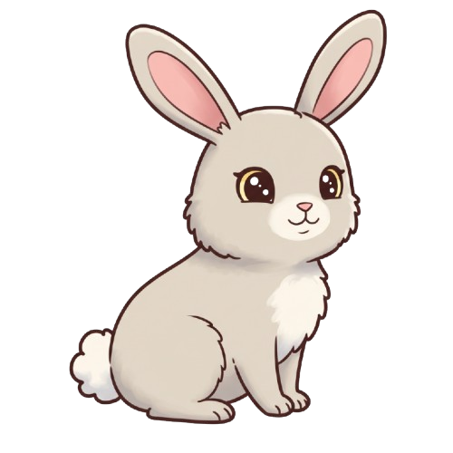

Jogo da Tabuada
🆠Conquista Desbloqueada!
🌟 Score:
0
💖💖💖
Regras
🆠Recorde:
0
Tabuada do: 2
☀️
? x ? = ?

🌟 x 0
Usar 🌟
Reiniciar
7
8
9
4
5
6
1
2
3
⌫
0
➜
Jogar Novamente
Regras do Jogo
Acerte a resposta da multiplicação antes que o balão caia!
Use o teclado numérico para digitar e ✠para confirmar.
✅ Resposta correta: Ganha pontos, avança para a próxima.
⌠Resposta errada ou tempo esgotado: Perde uma vida 💔.
Vidas: Começa com 💖💖💖. Fim de jogo se acabarem.
Power-ups (colete acertando a questão enquanto eles estão na tela):
â Estrela: Colete para usar depois (botão "Usar 🌟") e acertar a questão automaticamente.
ⳠAmpulheta: Deixa o *próximo* balão mais lento.
⚡ Raio: Cai rápido! Se coletar, ganha o *dobro* de pontos na questão.
🔊 Os efeitos sonoros devem ativar automaticamente (pode precisar de um clique/toque inicial na tela).
Objetivo: Complete todas as tabuadas do 2 ao 9 (até 9 x 10).
🆠Desbloqueie conquistas por seus feitos!
Fechar